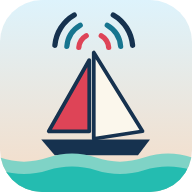

Master GMDSS
Marine radio practice and SRC / GMDSS exam revision
Jump straight in
VHF / DSCDistress, urgency and routine calls
NAVTEXReceiver set-up and messages
EPIRBFloat-free beacon and alert chain
Exams24 SRC exams and your mistakes
To install on iPhone: tap Share, then “Add to Home Screen”.